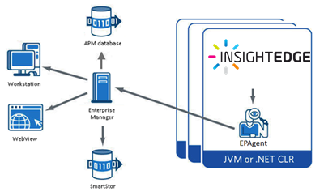
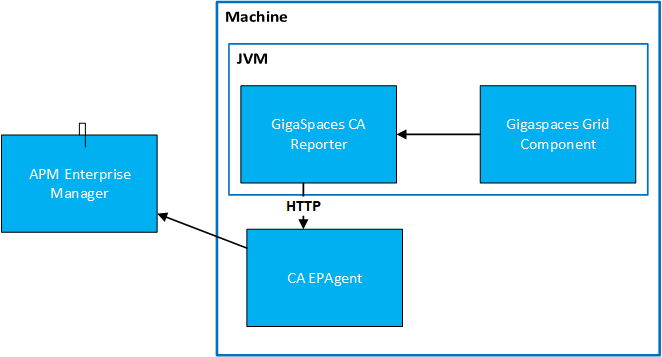
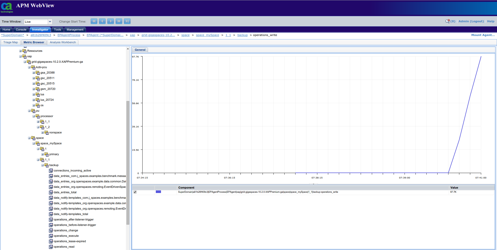

CA APM helps to monitor applications and react quickly when certain performance issues may occur.
The

The major components of CA Introscope are the Enterprise Manager, CA Introscope agents, Workstation, WebView, SmartStor, and APM database as shown in the graphic above. Many smaller components are explained in the CA Introscope product documentation.
The Enterprise Manager acts as the repository of CA Introscope performance metrics. The Enterprise Manager receives performance metrics from one or more CA Introscope agents, allowing users to collect metrics centrally from many applications, application servers, and supporting systems. You can deploy the Enterprise Managers in different ways depending on the size and complexity of the enterprise system. The role of a specific Enterprise Manager depends on how it is deployed in a standalone or in a clustered CA APM environment.
CA Introscope agents collect and report several types of application and environmental performance metrics. One agent is deployed per process (Java Virtual Machine [JVM] or .NET CLR instance). The total number of agents depends on the size of the CA Introscope deployment, for example: A small pilot network uses as few as half a dozen agents to monitor a few test applications. A large extended enterprise production environment uses hundreds or thousands of agents to monitor applications across the enterprise.
CA Introscope agents collect performance metrics from several sources:
You can import real-time generic and non-Java data into CA Introscope through modified version of the agent named the Environment Performance Agent (EPA or EPAgent). EPA uses simple scripts that allow CA Introscope to monitor virtually any type of application subsystem impacting performance. For example, using EPA CA Introscope can monitor directory servers, operating systems and messaging middleware.

We will show you how to configure a working environment with
The steps below use only basic configuration without getting into details, more information is available here.
IntroscopeEPAgent.properties file: add line introscope.epagent.config.networkDataPort=MY_PORT (by default this line is commented), where MY_PORT should be replaced with a port number, on which EPAgent will wait for data.MY_PORT is open on a machine where EPAgent will be deployed.$ file: add the following piece of XML code to reporters node (MY_PORT should be replaced with a value from the previous point, MY_HOST with IP address or hostname of a machine where EPAgent will be deployed): <reporter name="introscopeReporter" factory-class="com.gigaspaces.metrics.IntroscopeReporterFactory">
<property name="host" value="MY_HOST"/>
<property name="port" value="MY_PORT"/>
</reporter>
$.Investigator tab, then Metric Browser tab.*SuperDomain*/XAP host/EPAgentProcess/EPAgent(*SuperDomain*) should contain a sub-node xap that is the root of all metrics reported by To properly work, the integration requires a some configuration on both the Introscope and
The EPAgent deployed in an Introscope environment. It requires EPAgent to listen on a certain port for metrics data. To enable receiving metrics from network, property introscope.epagent.config.networkDataPort should be uncommented in IntroscopeEPAgent.properties (by default this is EPAgent configuration file, in case another file is used, described steps should be performed on that file) and set to port on which EPAgent will listen for metrics data, e.g.
introscope.epagent.config.networkDataPort=8003
File $ contains IntroscopeReporter must be added to it. Moreover, it has two mandatory properties:
host - hostname or ip address of a machine with EPAgent. Mandatory.port - port on which EPAgent listens for metrics data. This value has to match introscope.epagent.config.networkDataPort property described in the previous paragraph. Mandatory.hierarchy_pattern - This is an optional property. Pattern used to build name of the highest level of hierarchy. It may contain a {lookuplocator} or {lookupgroup} substrings, which will be replaced by current lookuplocator or lookupgroup, respectively. If output of pattern conversion is empty or contains { or } signs, then it will be recognized as invalid and an IllegalArgumentException will be thrown. This property is optional, since it has default value {lookupgroup}-{lookuplocator}.Below config to be included within the metrics.xml file:
<reporters>
<reporter name="introscopeReporter" factory-class="com.gigaspaces.metrics.IntroscopeReporterFactory">
<property name="host" value="127.0.0.1"/>
<property name="port" value="8000"/>
<property name="hierarchy_pattern" value="grid-{lookupgroup}"/>
</reporter>
...
</reporters>
This paragraph describes the important aspects of the
IntroscopeReporter - the main class that handles sending metrics inherits from MetricReporterIntroscopeReporterFactory - a class that creates reporters derives from MetricReporterFactoryIntroscope gathers metrics data from applications using agents. It provides several agents - one agent per one web framework. However, this functionality is not needed to integrate with EPAgent.
EPAgent (Environment Performance Agent) is a special type of agent that is used to monitor system wide or user defined statistics. It is a natural point of integration with
Plugins - EPAgent allows users to define custom plugins that are either separate programs or Java classes run by EPAgent.
HTTP Server - EPAgent (in Introscope 9.6) can create a simple HTTP server. In that case metrics are reported by sending GET requests with metric data (metric name, type, value) in query to the server.
Network communication - EPAgent may expose a port on which it will listen for requests containing metric data.
Integration by plugins would require additional work, because plugin semantics is that it pulls data, while the desired behavior is to accept data sent by EPAgent listens for data and one requests contains multiple entries.
EPAgent accepts all data that it receives via network (i.e. without authentication). Therefore, access to it must be limited by firewall.
EPAgent accepts metric data that is sent in specific format. Otherwise, it may log erroneous values or does not log them at all. Each line should contain data for one measured value. There are two formats for a single line: simple format or XML format. The latter one was chosen, since it provides more control over reported data (less restrictions on metric name, possibility to specify type of value).
Format of each line is as follows:
<metric type="TYPE" name="NAME" value="VALUE" />
There are three fields that need to be populated: type, name and value. Only the first one requires a short comment. Introscope has few types of metrics defined. Some of them are connected with a little bit of logic - e.g. Introscope may compute average value of all reported values.
However, the integration uses only the most basic ones - LongCounter for numerical data and StringEvent for others, because statistics are already processed by
Below is an example of metric data sent to Introscope:
<metric type="LongCounter" name="xap|groupA|myhost|lus|20237:lus_items" value="1" />
<metric type="LongCounter" name="xap|groupA|myhost|lus|20237:lus_pending-events" value="0" />
<metric type="LongCounter" name="xap|groupA|space|space_metricsSpace|0|primary:operations_lease-expired" value="100" />
There is no possibility to tie metric data with timestamp. Introscope connects a single metric report with the time it was received by Introscope, not sent by
RESOURCE_SEGMENT_1|...|RESOURCE_SEGMENT_N:METRIC_NAME
Resource segments are optional. They are separated from name by : and are separated from each other by |. Multiple resource segments create hierarchy, e.g. metrics xap|groupA|myhost|lus|21950:lus_items and xap|groupA|myhost|lus|21950:lus_listeners can be seen as:
|
 |
As you see these have a tree like format. IntroscopeReporter takes care of inserting hierarchy into predefined metrics, while custom metrics are reported without any name modifications.
Important task of IntroscopeReporter is to convert received metrics to Introscope format. The format was described in the previous paragraph, this paragraph lists all conversions done on metrics.
Inserting hierarchy into metric name depends on an initial metric name and available additional data retrieved from MetricTagsSnapshot.
OS metrics name starts with os_. IntroscopeReporter performs different conversion on network related and non-network related statistics.
Metric name starts with os_network_.
Format: xap|$TOP_LEVEL|$HOST|os|network|$NIC:METRIC_NAME_WITHOUT_PREFIX
| Before conversion | After conversion |
|---|---|
| os_network_rx-bytes | ``` xap |
Metric name starts with os_ and not with os_network_.
Format: xap|$TOP_LEVEL|$HOST|os|others:METRIC_NAME
| Before conversion | After conversion |
|---|---|
| os_memory_free-bytes | `xap |
Those metrics start with "process", "jvm" or "lrmi_". There are 2 subtypes - metrics for specific pu or process-wide (e.g. for GSA, GSC, etc.).
Metric tags contain pu_name key.
Format: xap|$TOP_LEVEL|pu|$PU_NAME|$PU_INSTANCE_ID:METRIC_NAME
| Before conversion | After conversion |
|---|---|
| jvm_threads_count | `xap |
Metric tags do not contain pu_name key.
Format: xap|$TOP_LEVEL|$HOST|$PROCESS_NAME_$PID:METRIC_NAME
| Before conversion | After conversion |
|---|---|
| jvm_threads_count | `xap |
Metric name has a lus_ prefix.
Format: xap|$TOP_LEVEL|$HOST|lus|$PID:METRIC_NAME
| Before conversion | After conversion |
|---|---|
| lus_items | `xap |
Metric name has a pu_ prefix.
Format:
xap|$TOP_LEVEL|pu|$PU_NAME|$PU_INSTANCE_ID:
METRIC_NAME_WITHOUT_PREFIX
| Before conversion | After conversion |
|---|---|
| pu_data ProcessorPollingEventContainer _processed-events |
`xap |
Space metrics name starts with "space_". Metrics for primary and backup are converted a little bit different.
Metric tag space_instance_id contains only numbers.
Format:
xap|$TOP_LEVEL|space|$SPACE_NAME|primary$SPACE_INSTANCE_ID:
METRIC_NAME_WITHOUT_PREFIX
| Before conversion | After conversion |
|---|---|
| space_operations_take | `xap |
Metric tag space_instance_id does not consist only of numbers.
Format:
xap|$TOP_LEVEL|space|space_$SPACE_NAME|backup$SPACE_INSTANCE_ID:
METRIC_NAME_WITHOUT_PREFIX
| Before conversion | After conversion |
|---|---|
| space_operations_take | `xap |
Metrics that do not meet conditions of any types presented above, are considered as others and almost no conversion is performed on them.
Format: xap|$TOPLEVEL:METRIC_NAME
| Before conversion | After conversion |
|---|---|
| custom_metric | `xap |
The LongCounter and StringEvent. LongCounter is reserved for numerical values - if an object representing metric value inherits from Numerical, it is supposed to be logged as LongCounter. Otherwise, metric type would be StringEvent.
A String object with numerical value (e.g. "0") would be recognized as StringEvent.
Introscope adds a few constraints on metrics and IntroscopeReporter conforms to all of them by modifying metric names or values.
Metric name and resource segments are cleaned from special signs, i.e. : and |. If a full name contains more than one resource-name separator (:), then this metric will not be logged at all. If any of resource segments contains resouce-resource separator (|), then a hierarchy level will be split.
Metric value of LongCounter type must carry integer value. Unfortunately, Introscope does not have any separate type for floats/doubles. Therefore, all numeric values are rounded. There are a few predefined metrics that suffer a little from this constraint (e.g. process_cpu_used-percent). However, those values are from 0 to 100 and in most cases reporting 65 instead of 64.7 is acceptable. It is worth to remember about this requirement if custom metrics with narrow range of values (e.g. from 0.0 to 1.0) may be defined - in this case it could make sense to report values multiplied by 10, 100, etc.
Steps below describe how to set up development environment to start working on this plugin. Files required:
To set up the development environment:
docker and docker-compose.https://github.com/stefansiegl/docker-introscope.git.introscope9.6.0.0otherUnix.jar and osgiPackages.v9.6.0.0.unix.tar to docker-introscope/enterprise-manager/9.6.0.0, docker-introscope/sample/9.6.0.0 and docker-introscope/webview/9.6.0.0.EPAgent9.6.0.0unix.tar to docker-introscope/sample/9.6.0.0.introscope.epagent.config.networkDataPort and change port if the default one is taken.-p PORT:PORT to the docker run command, where PORT should be substituted with a proper port number.docker-compose -f docker-compose-with-sample.yml upwebview-ip:8080 (webview-ip is an IP adress of docker container), type: user: Admin and password leave empty. In case you receive HTTP 404 error, wait a minute, because server used in webview needs a little time to start working.